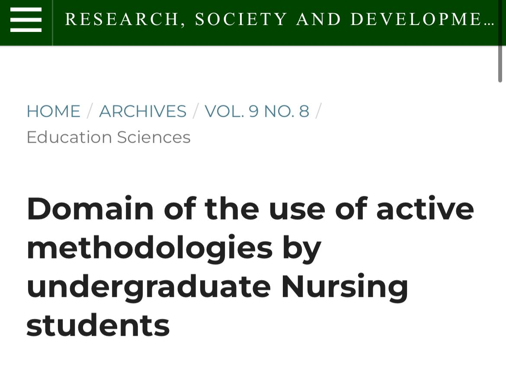
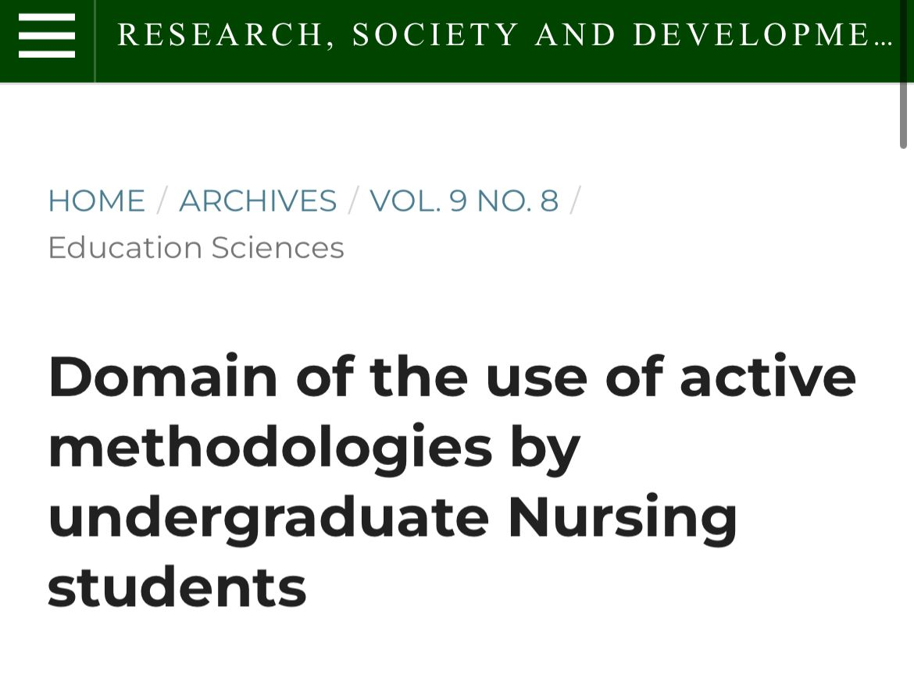

Sobre Mim
Meu nome é Thayane Steinbach Campos Maia, nascida em 16 de fevereiro de 1998. Sou bacharel em Enfermagem pelo IBMR (2021) e possuo diversas especializações, incluindo UTI, Enfermagem Obstétrica, Estratégia da Família e Saúde da Mulher (em andamento). Atuei em instituições como o Hospital Municipal Miguel Couto e a Maternidade Carmela Dutra, além de experiência em home care. Também realizei cursos focados em emergências obstétricas, neonatais, cardíacas e atendimento pré-hospitalar, sempre com dedicação ao cuidado humanizado e técnico de qualidade.
Artigos publicados
 

formação
- Bacharel em enfermagem DEZ/2021 (IBMR)
- Pós-Graduação em uti JUN/2023 (FACULDADE FUTURA)
- Pós-Graduação em enfermagem obstétrica DEZ/2023 (FABA)
- Pós-Graduação em estratégia da família MAI/2024 (DNA)
- Pós-Graduação em enfermagem em saúde da mulher (cursando)
Cursos realizados
- Intercorrências obstétricas - 200h
- Emergência no CTI Neonatal e Pediátrico - 200h
- Emergência no CTI cardíaco - 200h
- Socorrista (APH) - 80h
Experiência Profissional
- Estágio MAI/21 - DEZ/2021 - Hospital Miguel couto
- Enfermeira home care FEV/2022 - JUL/2023
- Estágio AGO/ 2023 - OUT/2023 - Hospital maternidade Carmela dutra